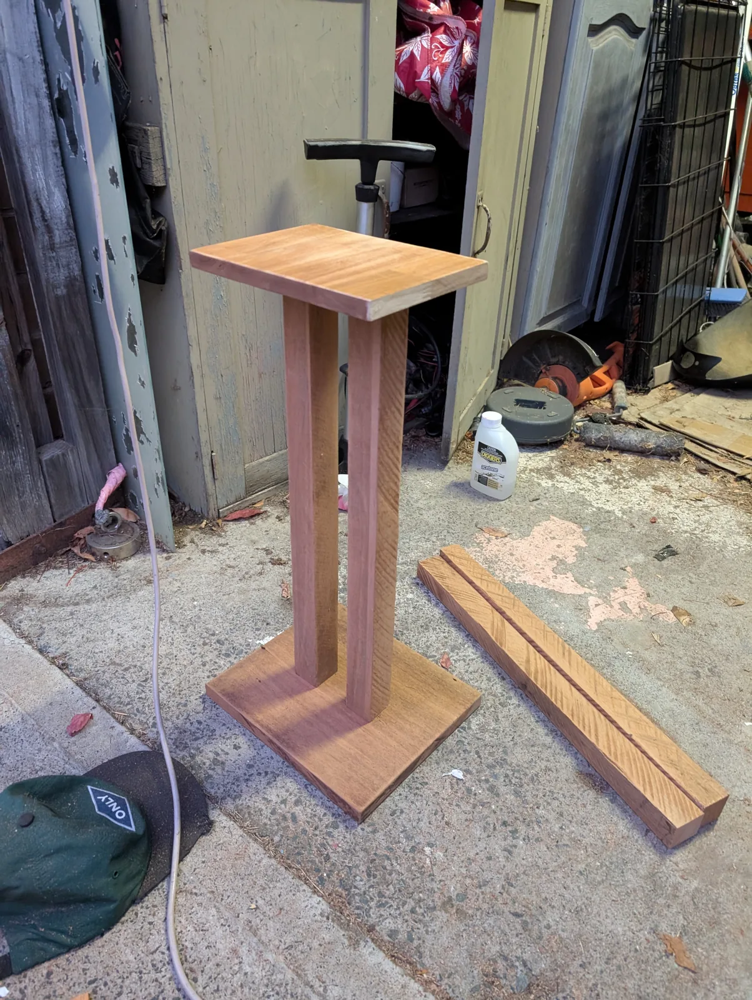
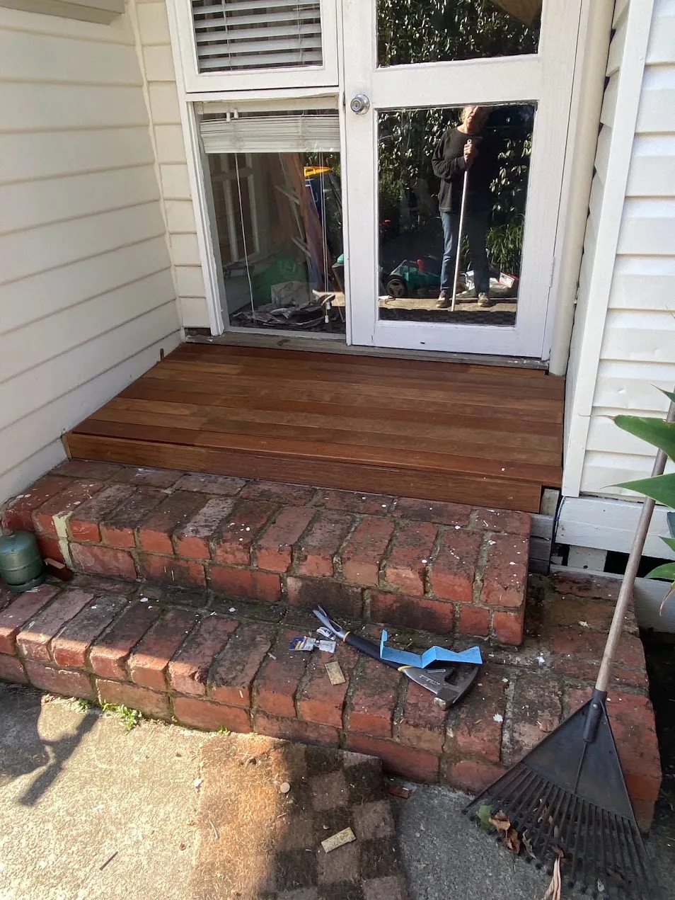
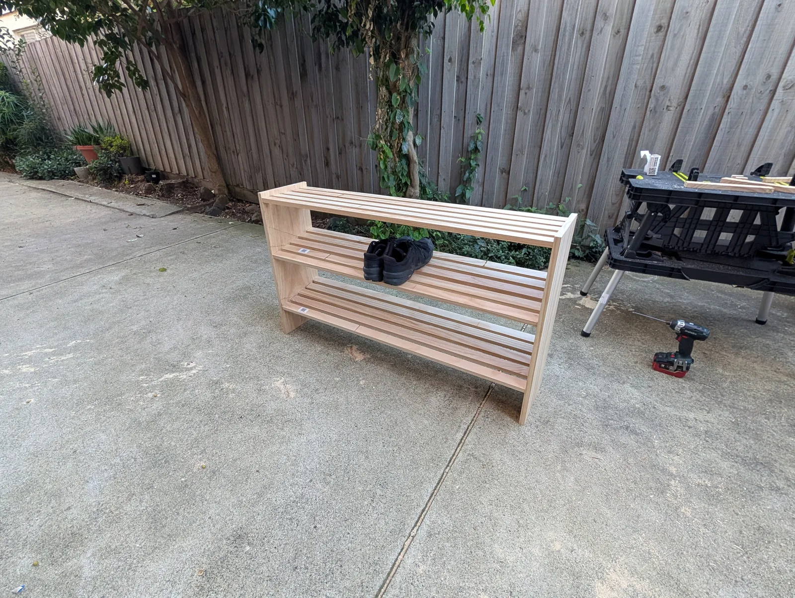
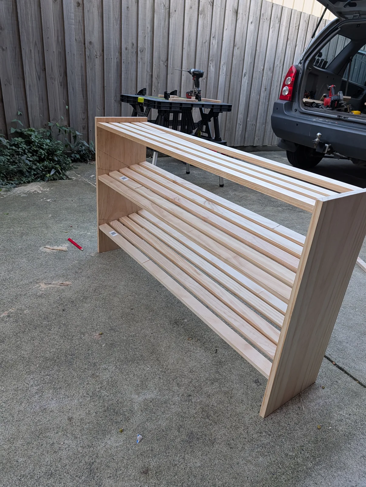
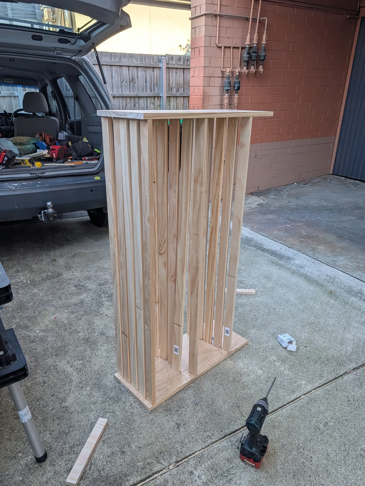

Infrastructure & Systems Engineer
Automating enterprise systems, tuning machines, and keeping users online.
I’m an infrastructure and systems engineer based in Melbourne. For the past six years, I’ve worked on enterprise IT—supporting hybrid cloud, Microsoft 365, and identity for large public and commercial organisations, while building PowerShell and Python tools to eliminate repetitive manual work.
Outside of computing, I spend my time building and maintaining road bikes, testing homelab systems, and riding endurance roads.
[01] CAREER HISTORY
Work Experience
Verifiable track record managing enterprise hybrid infrastructure, user identities, and automated deployment pipelines across public sector, healthcare, and commercial environments.
- Own the largest SharePoint farm in the Southern Hemisphere: 660,000+ users, 1,500+ sites, with 99.9% uptime maintained across a 4-year engagement.
- Ultimate Tier-3 escalation point for M365, SharePoint Online, and Google Workspace; delivered 15% reduction in repeat incidents by authoring root-cause knowledge base articles adopted across 200+ support staff.
- Engineered PnP PowerShell automation auditing and enforcing MFA compliance across 200+ SharePoint sites, eliminating manual compliance checks and producing automated ACSC Essential 8 reporting.
- Administered Exchange Hybrid and Teams federation for 20,000+ staff, resolving complex mail-flow, calendar-sharing, and cross-organisation collaboration issues within SLA.
- Resolved Active Directory, Entra ID, and Google Workspace sync conflicts across hybrid identity infrastructure, maintaining seamless SSO for all users.
- Spearheaded Azure cloud adoption and legacy application remediation, reducing on-premise server dependency by 30% and freeing 120+ hours/month in maintenance effort.
- Designed and deployed ServiceNow integration layer ingesting M365 presence data and algorithmic workload engine, eliminating manual triage and reducing ticket assignment time by 40%.
- Authored structured RCA reports and searchable knowledge base, cutting average resolution time by 25% and reducing new-hire onboarding from 3 weeks to 10 days.
- Delivered L1/L2 support at MyITHub service desk: device repair, OS reimaging, provisioning, and loan device management across a national fleet of 15,000+ endpoints.
- Engineered keystroke-injection automation (AutoHotkey) to fully automate ITSM ticket workflows in ServiceNow, eliminating 15+ hours/week of manual data entry across the team.
- Managed full endpoint lifecycle including OS migrations, Autopilot/UEM enrolment, and compliant hardware disposal under NIST 800-88 guidelines.
- Deployed a self-service kiosk portal for knowledge base access, password resets, and ticket logging, reducing service desk call volume by 20%.
- Led Windows 11 enterprise migration across 100+ clinical endpoints with 100% Windows Autopilot adherence in a live hospital environment — zero downtime, zero patient care disruption.
- Managed full migration lifecycle: hardware imaging, Autopilot enrolment, Intune policy deployment, EMR compatibility validation, and post-cutover hypercare.
- Served as primary liaison between clinical staff and engineering, resolving EMR and diagnostic tool compatibility issues in real time under hospital change-control protocols.
- Delivered hands-on hypercare support to 100+ medical staff post-cutover, achieving 98% user satisfaction in post-migration surveys.
- Delivered expert L3 support for GreenOrbit intranet platform across Cotton On, Harvey Norman, and Healthscope, maintaining 95% SLA resolution rate.
- Developed PowerShell automation reducing client migration processing by 87% (2 hours to 15 minutes), saving 10+ hours/month per migration cycle.
- Built Python/PowerShell patching scripts reducing manual effort by 20% and improving patch-cycle consistency across 500+ endpoints.
- Authored RCA documentation adopted as the reference standard for all subsequent migration cycles, reducing post-migration defect recurrence by 40%.
- Delivered 5+ enterprise SharePoint intranets for Victoria Police, Transurban, and Cimic Group using SPFx, React, and TypeScript.
- Implemented CI/CD pipelines via Azure DevOps, reducing deployment cycles by 25% while maintaining ISO 27001 governance controls.
- Led client discovery workshops driving a 20% increase in M365 platform adoption across three enterprise organisations.
- Executed end-to-end migration of legacy on-premise SharePoint environments to SharePoint Online with zero data loss.
- Performed Layer 1 infrastructure deployments, physical cabling, and fault-finding across residential and commercial environments in Melbourne's eastern suburbs.
[02] TECHNICAL COMPETENCIES
Skills & Education
A realistic inventory of systems, platforms, and languages I work with day-to-day.
[03] CODE & TOOLS
Featured Projects
Open-source tools, automation scripts, and local-first software built to solve real engineering problems.
Local-first job discovery platform and polyglot monorepo. FastAPI (Python) backend with multi-provider scrapers, SQLite/WAL persistence, and dual-persona AI scoring; React/Vite SPA with Kanban pipeline, code-split modal architecture, and a 750+ test suite.
github.com/Ludwixix/job-dashboard →Production PowerShell administration module for Microsoft 365, automating tenant-wide user lifecycle provisioning, license rebalancing, and Entra ID security audits.
github.com/Ludwixix/365AdminApp →Client-side browser extension integrating M365 presence data with ServiceNow ticket queues, eliminating manual status lookups for L1/L2 service desk staff.
github.com/Ludwixix/YellowSnow →Python tool enabling service desk staff to execute PowerShell diagnostics against Exchange and Teams without terminal complexity, reducing L2 escalation volume.
github.com/Ludwixix/pyspo-tool →Independent Australian IT industry platform at mspplaybook.reviews — 325+ editorial articles, 95 MSP profiles with employee sentiment and red-flag intelligence, and 7 free browser-based tools (Contract Red Flag Scanner, Health Score, Cost Model). Custom Python static-site engine with Netlify Functions and Supabase.
mspplaybook.reviews →[04] MECHANICAL CRAFT & ENDURANCE
Scott Foil RC & Bike Technician Lab
 🔍 Expand
🔍 Expand
 🔍 Expand
🔍 Expand
 🔍 Expand
🔍 Expand
 🔍 Expand
🔍 Expand
| Chassis | Scott Foil RC HMX Carbon Aero Road |
| Drivetrain | Shimano Ultegra Di2 R8170 12-Speed Electronic |
| Power & Gearing | Magene Spider Power Meter · CNC Iridescent Oval Chainrings · 11-30T Cassette |
| Pulley System | Ceramic Bearing Oversized Pulley Wheel (OSPW) System |
| Wheelset & Tires | Magene Exar Carbon Aero Tubeless · Continental GP5000 S TR |
| Ergonomics & Fit | Evolutio Physio Bike Fit · -10.2mm Reach · 7° Medial Hood Inward Tilt |
| Target Cadence | ~100 RPM Average Pacing · Dual-Sided Telemetry |
Learnings & Hard-Won Battles
The Di2 Oval Chainring Dilemma
The Struggle: Shimano electronic front derailleurs are programmed to track a circular chainring arc. Installing non-round oval chainrings caused intermittent cage rub at maximum stroke elongation and catastrophic dropped chains on rapid front downshifts under torque.
The Fix: Precision micro-spacing of the front braze-on clamp to achieve 1.0mm vertical clearance at the ring's highest ellipse point, combined with +0.5° outward tail yaw and fine-tuning E-Tube shift speed limits.
Overcoming Wrist Strain via Clinical Fit
The Struggle: Aggressive aero drop setups triggered ulnar nerve compression, wrist collapse, and neck fatigue on rides exceeding 80km.
The Fix: Undertook comprehensive bike fit analysis at Evolutio Sports Physio. Identified tight 143mm sit-bone bottleneck, shortened effective stem reach by 10.2mm, and rotated the brake hoods inward 7° to align with natural forearm pronation.
Ultrasonic Waxing vs Factory Grime
The Struggle: Traditional wet lube attracts Melbourne road grit, acting as an abrasive grinding paste that wears through expensive 12-speed chains and cassettes every 2,500km.
The Fix: Multi-stage ultrasonic solvent degreasing (mineral spirits followed by pure isopropyl), followed by hot-melt paraffin/PTFE crockpot bath. Zero chain grime, sub-3 watt frictional resistance, and 3x component lifespan.
Eliminating Rotor Rub & Lever Sponge
The Struggle: Microscopic air pockets trapped in internal handlebar routing resulted in inconsistent lever bite point and frustrating rotor rub after hard mountain descents.
The Fix: Dual-syringe vacuum pulse flush with Shimano low-viscosity mineral oil, followed by caliper piston exercising and optical feeler gauge centering.
[05] TIMBER JOINERY & FABRICATION
Timber Joinery & Workshop Fabrication
git revert when a chisel cuts past a shoulder line or when timber splits along the grain. Working with Australian hardwoods and architectural timber demands honest spatial geometry, razor-sharp edge tools, and deep respect for material physics.

🔍 Expand
🔍 Expand
🔍 Expand
🔍 Expand
🔍 Expand| Workshop Setup | Outdoor Driveway & Bench · Portable Saw Horses · Metabo Cordless Tooling |
| Primary Timbers | Tasmanian Oak (Eucalyptus regnans) · Radiata Pine · Merbau Hardwood |
| Joinery Methods | Dowel Joinery · Pocket-Hole Fasteners · Halved Lap Joints · Scribed Masonry Contours |
| Finishing Chemistry | Danish Oil · Boiled Linseed Oil · Exterior Decking Oil · 400-Grit Wet Sanding |
| Key Tools | Metabo 18V Cordless Drills · Japanese Pull Saw · Whetstone-Honed Chisels · Hand Planes |
Learnings & Hard-Won Battles
The Driveway Workshop Dilemma
The Struggle: Working without a stationary 8-inch cast-iron jointer or thickness planer on an uneven concrete driveway means store-bought timber arrives with natural crown, bow, and twist.
The Fix: Developed a strict manual squaring ritual: checking with winding sticks, flattening high spots with a tuned No. 4 smoothing plane, and using laminated clamping cauls to hold assemblies flat during glue-ups.
Taming Tasmanian Oak (Eucalyptus Regnans)
The Struggle: Tasmanian Oak has dense, interlocking fibers that tear out aggressively when worked against the grain with factory-ground chisel blades.
The Fix: Honing chisels and plane irons up to 6000-grit on King waterstones until they slice end-grain like butter. Taking microscopic 0.05mm shavings and reading ray fleece orientation before every stroke.
The Narrow Slat Splitting Trap
The Struggle: Fastening 19mm pine slats near edge faces resulted in catastrophic end-grain splitting under screw wedging pressure, ruining finished components.
The Fix: Established a non-negotiable two-stage pre-drill protocol: stepped pilot bit with counterbore depth stop, plus rubbing screw threads in beeswax to reduce rotational friction into dry softwood.
Fitting Hardwood to 50-Year-Old Brick
The Struggle: The exterior brick step leading to the French doors was out of level by 14mm across 1.2 meters, with uneven mortar bulges that prevented standard square framing.
The Fix: Used compass scribing to transfer the masonry profile directly onto the hardwood ledger. Shimmed the sub-frame with composite rot-proof packers and left a 6mm drip reveal for water drainage.
[06] SYSTEMS EXPERIMENTATION
Homelab & Physical Making
I run a private, local-first homelab for testing virtualization, network isolation, and IoT automation alongside hands-on hardware fabrication.
Proxmox VE & ZFS Hypervisor
Private cluster used for evaluating lightweight Linux containers (LXC), isolated VLAN network topologies, and local backup automation with ZFS snapshots.
Home Assistant Green & IoT Mesh
Self-hosted home automation hub running Zigbee and Z-Wave meshes. Prioritizes local-first control and reliability with zero cloud dependency.
Electronics & Soldering
Hand-soldered mechanical macro pads and keyboards, circuit repair, and custom firmware flashing with QMK/ZMK.
Tasmanian Oak Joinery
Building bespoke desk accessories, timber shelves, and audio risers. Working with grain, chisels, and hand planes teaches patient precision. View workshop archive →
[07] GET IN TOUCH
Contact
I'm currently based in Melbourne and open to Systems Engineering, Infrastructure Engineering, and Managed Services roles.